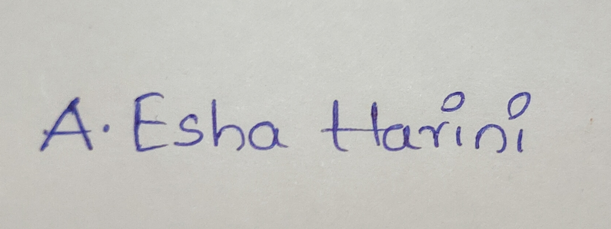

ESHA HARINI APPANA .jpg)
email:20551a0202.harini@gmail.com
OBJECTIVE:
To secure a responsible career opputunity to fully utilize my skills,while making a significant contribution to the success of the company.
EDUCATION:
- GODAVARI INSTITUTE OF ENGINEERING AND TECHNOLOGY
Bachelor of Technology[Electrical and Electronics Engineering]
8.2
Intermediate
9.79
- MONTESSORI ENGLISH MEDIUM HIGH SCHOOL
SSC
9.5
SKILLS:
INTERNSHIPS;
- Internship done on PYTHON from 01-08-22 to 25-10-22
During the Internship,I worked on a project using python to prepare a passenger list.
I utilized python's built-in-functions and modules to manipulate and manage the passenger data efficiently.
PROJECTS:
- BRIDGELESS LANDSMAN CONVERTER WITH HYBRID CONTROL TECHNIQUE FOR POWER FACTOR CORRECTION IN
EV APPLICATION
The Landsman Converter is used to acheive the maximum power point.The converters provide any type of the
required voltage at the desired magnitude.Hence this project proposes a Hybrid controller based Bridgeless landsman converter
is presented for the power factor correction.The obtained results is implemented using MATLAB simulation indicate that the
proposed approach maintains sustainable environment with enhanced efficiency and minimal harmonics.
STRENGTHS:
- Good communication skills
- Confident and Determined
- Time management
DECLARATION:
- I here by declare that all the abovementioned information is true to the best of my knowledge and belief.
DATE:10-06-2024
SIGNATURE:
